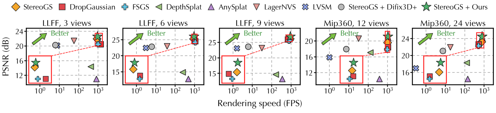
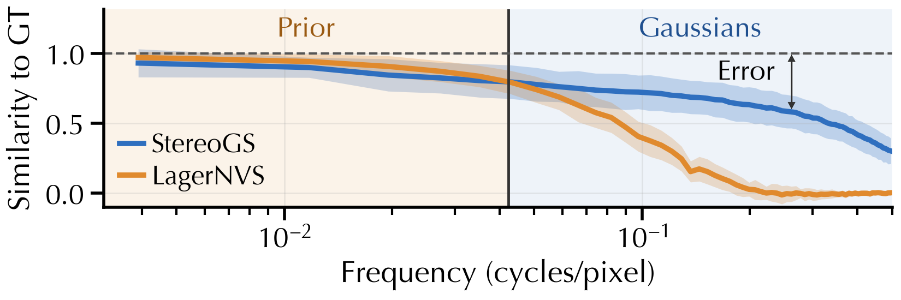
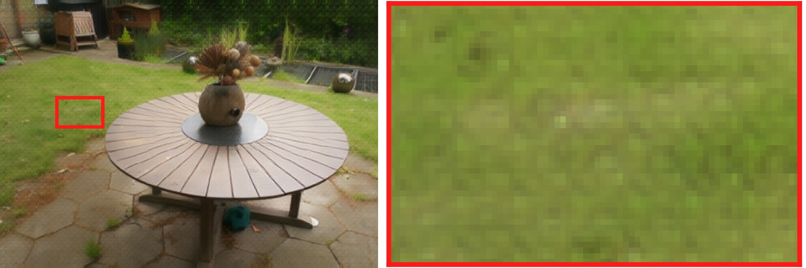
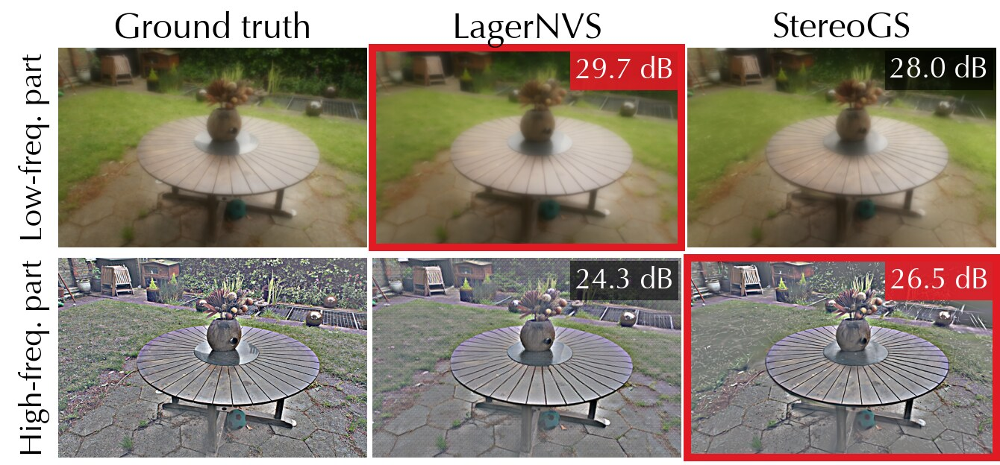
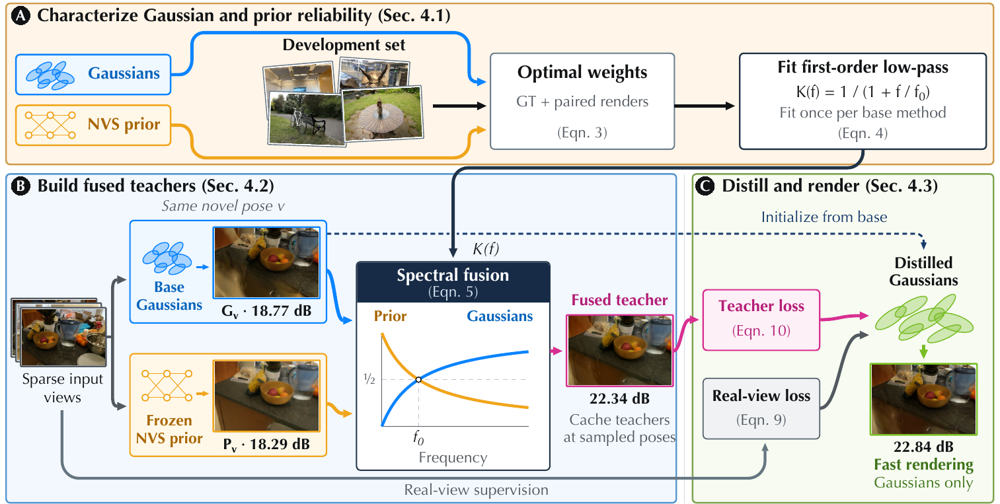
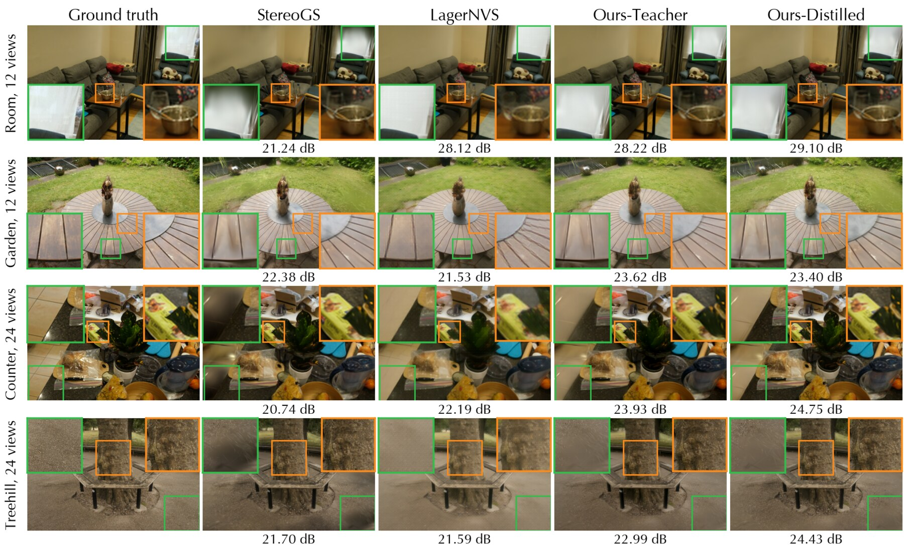

+1.0–1.2 dB
PSNR gain
on StereoGS, DropGaussian and FSGS, averaged over 42 settings
Low frequencies from the prior. High frequencies from the Gaussians.
A plug-and-play method that enhances any sparse-view Gaussian model with a pretrained feed-forward novel view synthesis model. We fuse the two per frequency with a one-parameter low-pass kernel, then distill the fused images back into the Gaussians, so the result renders as fast as the base model.
+1.0–1.2 dB
PSNR gain
on StereoGS, DropGaussian and FSGS, averaged over 42 settings
917 FPS
real-time rendering
distillation adds no Gaussians and no network
28×
faster than the teacher
at a similar quality to the fused teacher
1
fitted parameter
the crossover frequency of a first-order low-pass kernel
Overview
Sparse-view Gaussians render in real time but break far from the training views. Feed-forward NVS models carry a prior learned from many scenes, but render more than ten times slower and leave high-frequency artifacts on out-of-domain scenes. Our method takes the strengths of both.

Observation
We compare the errors of the two models at every spatial frequency. The error of the Gaussians rises on a straight line in log frequency, while the error of the prior starts lower and rises faster. The two curves cross once: below the crossover the prior is more accurate, above it the Gaussians are.

garden with 12 views.
garden with 12 views (red box, enlarged on the right).
Method
The relative reliability of the prior falls inversely with frequency, so the optimal fusion weight is a first-order low-pass filter with a single parameter: the crossover frequency where both models are equally reliable.

On a development set, we measure the optimal weight on the prior per frequency and fit the one-parameter low-pass kernel to it.
The kernel takes the low frequencies from the prior render and the high frequencies from the Gaussian render.
The fused teachers and the real input views supervise the Gaussians, so the slow prior is gone at render time.
Results
We evaluate on LLFF with 3, 6 and 9 views and on Mip-NeRF 360 with 12 and 24 views, 42 settings in total. The kernel is fitted on development settings that are held out from every evaluation.

| Method | FPS ↑ | PSNR ↑ | SSIM ↑ | LPIPS ↓ |
|---|---|---|---|---|
| LagerNVS | 34.7 | 21.99 | .605 | .228 |
| StereoGS | 882 | 23.15 | .754 | .199 |
| StereoGS + Ours-Teacher | 33.1 | 24.37 | .753 | .196 |
| StereoGS + Ours-Distilled | 917 | 24.16 | .766 | .184 |
Citation
@article{lin2026spectral,
title = {Enhancing Sparse-View Gaussian Splatting with Feed-Forward Priors via Spectral Fusion and Distillation},
author = {Lin, Weikai and Dai, Jun and Zhao, Sheng and Zhao, Junjie and Zhu, Yuhao},
journal = {arXiv preprint},
year = {2026}
}